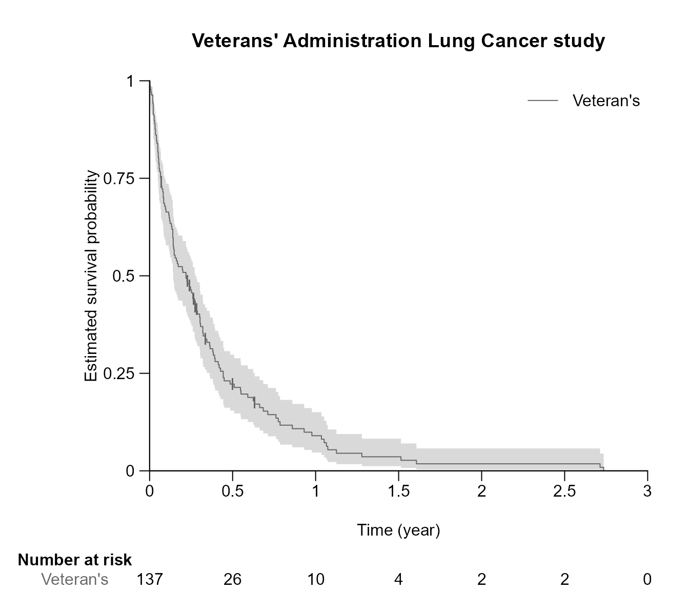
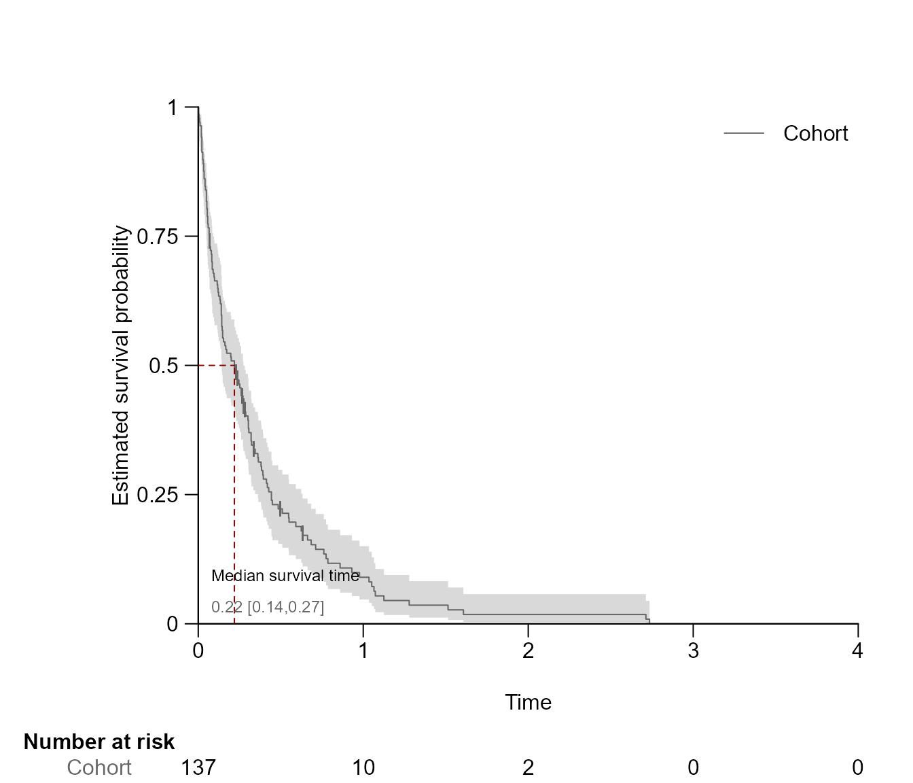
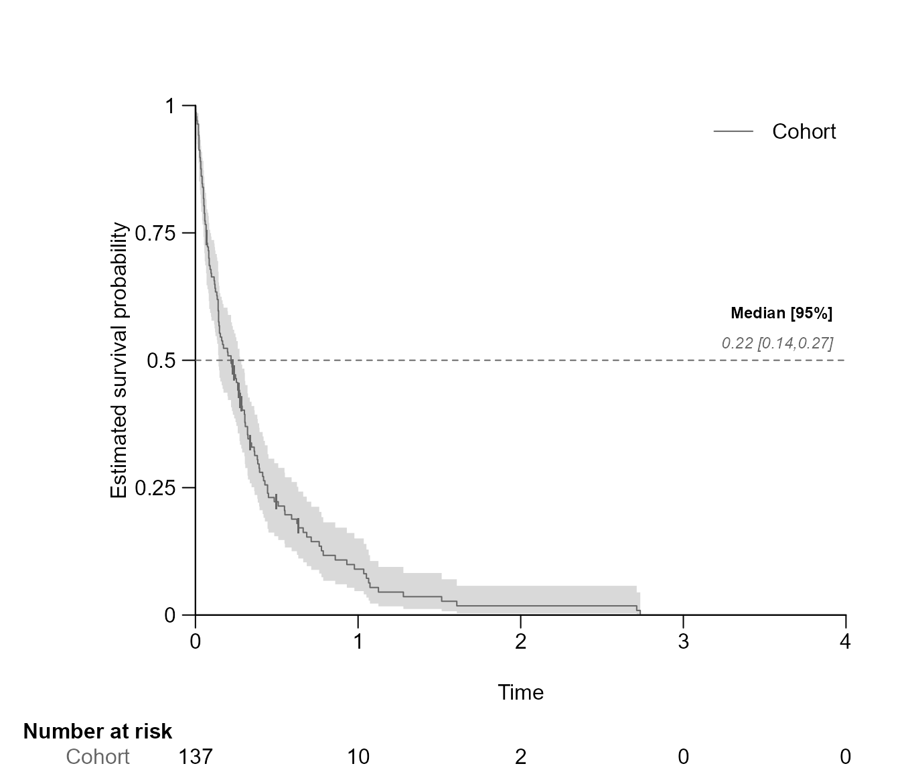
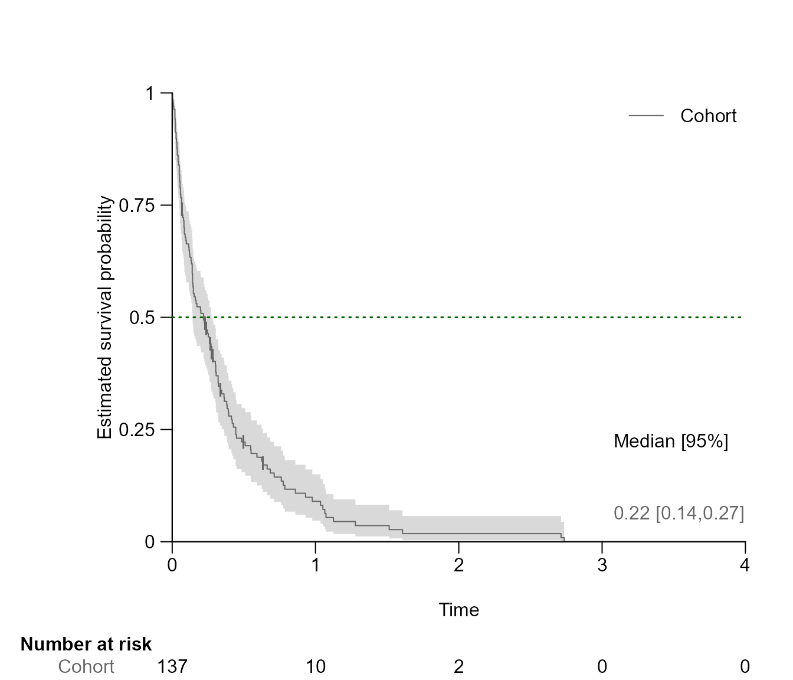
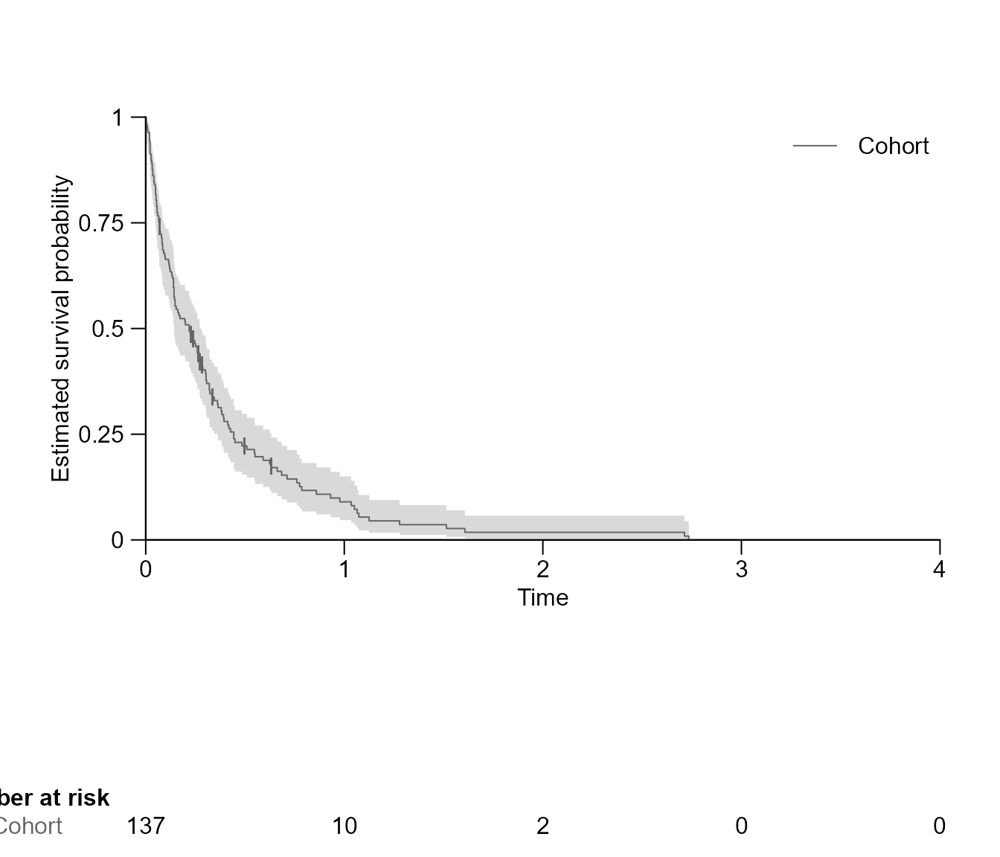
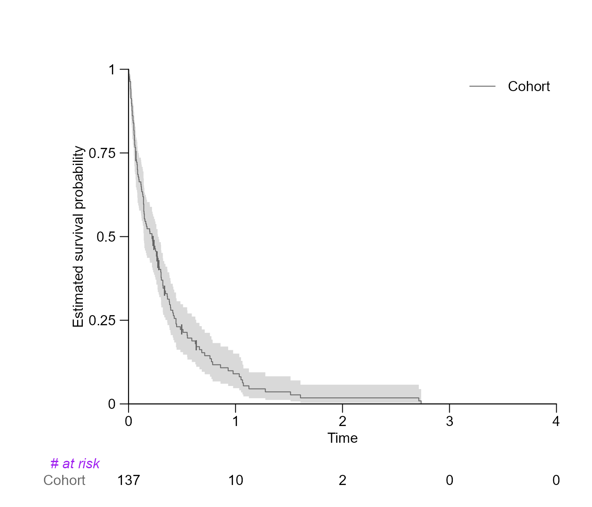
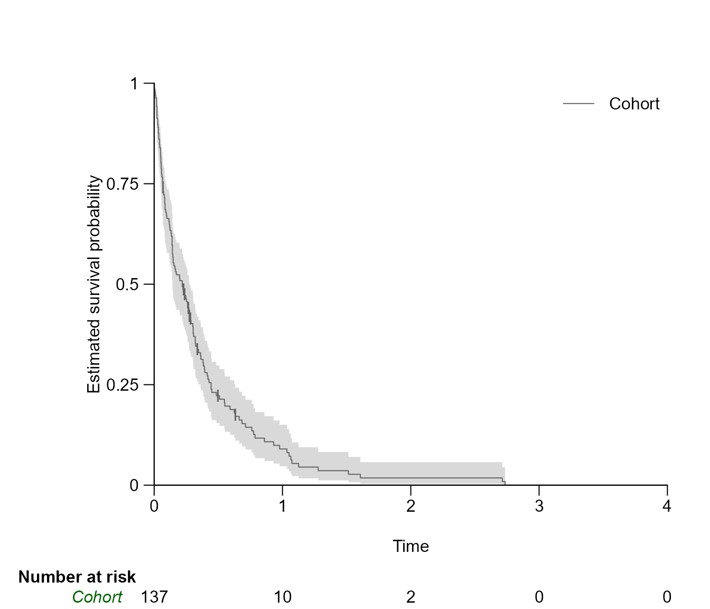
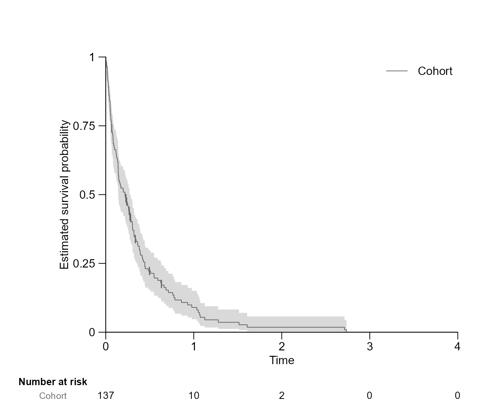

After inserting the survfit{survival} object into
surv.plot{survSAKK}, we can create simple survival curves,
allowing to visualize survival patterns and incorporate various
statistics in our plot.
To show some benefit of this function, Veterans’ Administration Lung Cancer study data, available in the survival package is used.
Data
# Load required libraries
library(survSAKK)
library(survival)
# Load data
veteran <- survival::veteran
# Define the reference arm
veteran$trt <- factor(veteran$trt,
levels = c(1,2),
labels = c("Standard","Test"))
# Create survival objects
veteran_fit_yr <- survfit(Surv(time / 365.25, status) ~ 1, data = veteran)
veteran_fit_mt <- survfit(Surv(time / 365.25 * 12, status) ~ 1, data = veteran)
veteran_trt_fit_yr <- survfit(Surv(time / 365.25, status) ~ trt, data = veteran)
veteran_trt_fit_mt <- survfit(Surv(time / 365.25 * 12, status) ~ trt, data = veteran)Drawing survival plot
surv.plot(veteran_fit_yr)Customisation of axis limits and label
Renaming of the labels and Axis:
surv.plot(veteran_fit_yr,
# Label
main = "Veterans' Administration Lung Cancer study",
xlab = "Time (year)",
legend.name = c("Veteran's"),
# Limits
xlim = seq(0,3,by = 0.5))
Custamisation of the x and y axis label position
surv.plot(veteran_trt_fit_yr,
# Specifies on which line on the plotting area
# X and Y label should be drawn
xlab.pos = 3,
ylab.pos = 3.75)Custamisation of the marging area
surv.plot(veteran_fit_yr,
# How many bottom lines should be drawn
margin.bottom = 10,
# How many left lines should be drawn
margin.left = 8)
Drawing segment
In this section is shown how to highlight a specific quantile or time point as a segment in the survival curve and how to adjust segment options.
Drawing segment line for a specific quantile
Drawing a segment line for the median, which corresponds to 0.5 quantile.
surv.plot(veteran_fit_yr,
# Segment Options
segment.quantile = 0.5)
Drawing segment line for a specific time point
Drawing a segment line at time point 1.
surv.plot(veteran_fit_yr,
# Segment Options
segment.timepoint = 1)
Renaming segment title, font size, and colour
surv.plot(veteran_fit_yr,
# Segment Options
segment.quantile = 0.5,
segment.main = "Median survival time",
segment.annotation = "bottomleft",
segment.cex = 0.75,
segment.col = "darkred")
Modify segment font
surv.plot(veteran_fit_yr,
# Segment Options
segment.quantile = 0.5,
segment.type = 1,
segment.cex = 0.75,
segment.font = 3,
segment.main.font = 2) 
Modify segment line type, line width and text spacing
surv.plot(veteran_fit_yr,
# Segment Options
segment.quantile = 0.5,
segment.annotation = c(3, 0.06),
segment.col = "darkgreen",
## segment type
segment.type = 1,
## segment line type
segment.lty = 'dotted',
## segment line width
segment.lwd = 1.5,
# spacing between the text in unit of x-coordinates
segment.annotation.space = 0.16) 
Inlcude statistics
There is three options to display the statistics:
logrank
gives the p value of the conducted log rank test using
survdiff{survival}.
coxph
gives the hazard ratio (HR) and its 95% CI of the conducted Cox
proportional hazards regression using coxph{survival}.
coxmodel
gives N (number of observations), Events
(Number of events), HR(hazard ratio), lwrCI
(lower 95% confidence interval), uprCI (upper 95%
confidence interval) and Logrank (p-value corresponding to
the Chisquare statistic) of the conduct Cox proportional hazards
regression using summary(coxph{survival}).

coxph
surv.plot(veteran_trt_fit_yr,
show.legend = FALSE,
stat = "coxph",
stat.position = "bottomright")
coxmodel
surv.plot(veteran_trt_fit_yr,
legend.position = "right",
stat = "coxmodel",
stat.position = "topright")
Modify stat position, colour, text size, and text font
surv.plot(veteran_trt_fit_yr,
# Segment Options
stat = "logrank",
stat.position = "bottomright",
stat.col = "darkblue",
stat.cex = 0.85,
stat.font = 2)
Drawing risk table
Per default the risk table is provided below the Kaplan-Meier plot. It provides information about the number of patients at risk at different time points thought the study.

Modify risktable position
surv.plot(veteran_fit_yr,
# How many bottom lines should be drawn
margin.bottom = 10,
# How many left lines should be drawn
margin.left = 4,
# Define position of the risk table
risktable.pos = 8.5)
Modify risk table title
surv.plot(veteran_fit_yr,
risktable.title = "# at risk",
risktable.title.font = 3,
risktable.title.col = "purple",
# specifying the position of the title on the x-axis
risktable.title.position = -0.5) ## Modify risk table label names
surv.plot(veteran_fit_yr,
risktable.name.col = "darkgreen",
risktable.name.font = 3,
# specifying the position of the title on the x-axis
risktable.name.position = -0.45)
Modify risk table font size
surv.plot(veteran_fit_yr,
risktable.cex = 0.9,
risktable.title.cex = 0.85,
risktable.name.cex = 0.80)
Multiple survival plots
par(mfrow=c(2,2))
# Plot 1
surv.plot(fit = veteran_fit_yr,
cex = 0.8,
risktable.name.position = -0.7)
# Plot 2
surv.plot(fit = veteran_fit_yr,
xlim = seq(0,3,0.5),
cex = 0.8,
segment.quantile = 0.5,
segment.annotation = "none",
risktable.name.position = -0.5)
# Plot 3
surv.plot(fit = veteran_fit_yr,
col = "darkred",
xlim = seq(0,3,0.5),
cex = 0.8,
legend.name = "Veterans",
show.legend = FALSE,
segment.quantile = 0.5,
segment.annotation = "right",
segment.cex = 0.7,
risktable.name.position = -0.7)
par(mfrow=c(1,1))
par(mfrow=c(2,1))
# Plot 1
surv.plot(fit = veteran_trt_fit_yr,
bty = 'o',
legend.title = "Treament regimens",
legend.name = c("LT60","OV60"),
legend.text.font = 2,
col = c("darkred", "darkblue"),
xlim = seq(0,3, by = 0.5),
xlab = ("Time (month)"),
segment.quantile = 0.5,
stat = "logrank",
stat.position = "bottomleft",
risktable.col = c("darkred","darkblue"))
# Plot 2
surv.plot(fit = veteran_trt_fit_yr,
grid =TRUE,
col = c("darkgreen","yellow4"),
xlab = "Time (year)",
xlim = seq(0,3, by = 1),
legend.position = "bottomleft",
stat = "coxmodel",
stat.position = "bottomright")